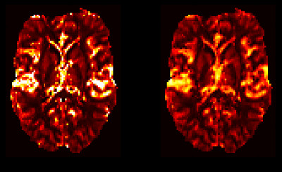

Contents
- Introduction
- User Guide
- Theory

VERBENA: Vascular Model Based Perfusion Quantification for DSC-MRI
Verbena is a Bayesian Inference tool for quantification of perfusion and other haemodynamic parameters from Dynamic Susceptibility Contrast perfusion MRI of the brain. VERBENA complements the BASIL tools for the quantification of perfusion using Arterial Spin Labelling MRI and is built on the same core inference algorithm (FABBER). VERBENA uses a specific physiological model for capillary transit of contrast within the blood generally termed the 'vascular model' that was first described by Ostergaard (see below). In VERBENA the model has been extended to explicitly infer the mean transit time and also to optionally include correction for macro vascular contamination - contrast agent within arterial vessels - more information on the model can be found in the theory section.
VERBENA takes a model-based approach to the analysis of DSC-MRI data in contrast to alternative 'non-parametric' approaches, that often use a Singular Value based Deconvolution to quantify perfusion. An alternative Bayesian Deconvolution approach is also available, but not currently distributed as part of FSL. For more information see the reference below and contact the senior author.
VERBENA is scheduled for a future release of FSL (it is not to be found in the current release). However, if you are interested in using VERBENA, it is possible to provide a pre-release copy that is compatible with more recent FSL releases.
Referencing
If you use VERBENA in your research, please make sure that you reference the first article listed below.
Chappell, M.A., Mehndiratta, A., Calamante F., "Correcting for large vessel contamination in DSC perfusion MRI by extension to a physiological model of the vasculature", e-print ahead of publication. doi: 10.1002/mrm.25390
The following articles provide more background on the original vascular model from which the VERBENA model is derived:
Mouridsen K, Friston K, Hjort N, Gyldensted L, Østergaard L, Kiebel S. Bayesian estimation of cerebral perfusion using a physiological model of microvasculature. NeuroImage 2006;33:570–579. doi: 10.1016/j.neuroimage.2006.06.015.
Ostergaard L, Chesler D, Weisskoff R, Sorensen A, Rosen B. Modeling Cerebral Blood Flow and Flow Heterogeneity From Magnetic Resonance Residue Data. J Cereb Blood Flow Metab 1999;19:690–699.
An alternative Bayesian 'non-parametric' deconvolution approach has been published in:
Mehndiratta A, MacIntosh BJ, Crane DE, Payne SJ, Chappell MA. A control point interpolation method for the non-parametric quantification of cerebral haemodynamics from dynamic susceptibility contrast MRI. NeuroImage 2013;64:560–570. doi: 10.1016/j.neuroimage.2012.08.083.